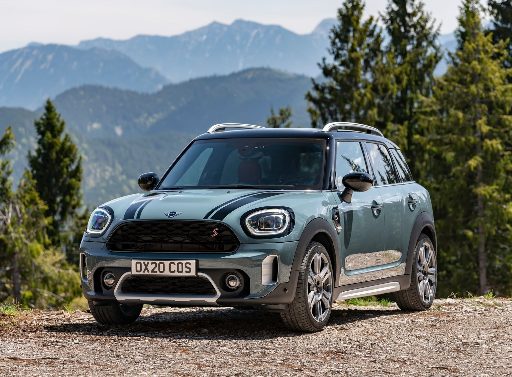

Door de countryside
De Mini Countryman is de grootste Mini die op dit moment te kopen is. Ook het enige model van MINI dat een SUV is en geen hatchback of station.
Wat heeft de Countryman te bieden?
De Mini Countryman, een opvallende verschijning binnen het Mini-gamma, heeft zijn eigen unieke plaats veroverd in de wereld van compacte SUV's. Met zijn kenmerkende ontwerp, compacte formaat en praktische eigenschappen heeft de Countryman een brede aantrekkingskracht op autoliefhebbers over de hele wereld.
Een van de meest in het oog springende aspecten van de Mini Countryman is zijn design. Ondanks zijn compacte afmetingen heeft de auto een stoere en robuuste uitstraling. Het opvallende front, de kenmerkende grille en de opvallende koplampen geven de Countryman een eigen identiteit binnen het Mini-portfolio. Het behoudt de iconische stijlkenmerken van het merk, zoals de ronde koplampen en het zwevende dak, maar voegt daar een extra dosis avontuur aan toe.
Prestaties en bruikbaarheid
Wat betreft prestaties biedt de Mini Countryman verschillende motoropties, waaronder benzine- en dieselmotoren, evenals hybride varianten. De wendbaarheid en responsiviteit van de auto maken hem geschikt voor zowel stadsverkeer als avontuurlijke ritjes op het platteland. De optionele vierwielaandrijving draagt bij aan de stabiliteit en grip, wat de Countryman geschikt maakt voor verschillende rijomstandigheden.
Een ander kenmerk dat de Mini Countryman onderscheidt, is zijn praktische bruikbaarheid. De achterbank is neerklapbaar, wat de laadruimte vergroot en de auto geschikt maakt voor het vervoeren van grotere voorwerpen. Dit, gecombineerd met de hogere zitpositie, draagt bij aan het gevoel van functionaliteit en veelzijdigheid.
Interieur en tech
Het interieur van de Mini Countryman is ontworpen met aandacht voor detail en biedt een mix van comfort en functionaliteit. Ondanks zijn compacte formaat is het interieur verrassend ruim, met voldoende hoofd- en beenruimte voor zowel bestuurder als passagiers. De kwaliteit van de materialen en afwerking draagt bij aan de algehele luxe uitstraling van het interieur.
Ten slotte biedt de Mini Countryman een scala aan geavanceerde technologische functies, waaronder infotainmentsystemen, connectiviteitsopties en geavanceerde rijhulpsystemen. Deze eigenschappen dragen bij aan het moderniseren van de rijervaring en maken de Countryman aantrekkelijk voor diegenen die op zoek zijn naar zowel stijl als functionaliteit in hun voertuig.
Tot slot
In conclusie biedt de Mini Countryman een unieke combinatie van Mini's kenmerkende stijl, compacte formaat en praktische eigenschappen. Of het nu gaat om stadsritten of avontuurlijke uitstapjes, de Countryman weet een evenwicht te vinden tussen stijlvolle elegantie en praktische bruikbaarheid, waardoor het een aantrekkelijke keuze is binnen het segment van compacte SUV's.